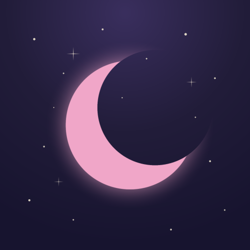

合言葉を入れてください
違うみたい、もう一度
分析的瞑想は「聞く瞑想」ではなく「考える瞑想」です。問いが読み上げられたあとは長い沈黙になります。 その沈黙が本体なので、言葉を待たずに、自分の頭で考えてください。 考えて何か腑に落ちたら、分析をやめて、その感じにただ留まります（止住）。
「自分がやらなきゃ」と思った瞬間に、それは背負う荷物になります。重いのは課題そのものではなく、
背負っているという状態のほうです。だから解決しなくても、降ろした時点で軽くなります。
手放しの瞑想と同じことを、紙の上でやります。
左に書いたら、ひとつずつ声に出して読みます。読んで胸が重くなったものを押すと、右へ移ります。
押した瞬間にほんの少しだけ軽くなれば、それで足りています。一分後にまた重くなっても構いません。
思い出したときに押すだけでいいので、毎日やらなくていいです。右の項目を押すと左へ戻ります。
これは気持ちの持ち方の練習であって、治療ではありません。つらい症状があるときは医療機関で診てもらってください。
iPhone で使うとき
・マナーモードは解除してください（消音スイッチで音が出ないことがあります）。
・「はじめる」を押した瞬間に音声が有効になります。押さずに待っていても喋りません。
・セッション中は画面が消えないようにしています。それでもロックされると音声は止まります。
・共有ボタン →「ホーム画面に追加」でアプリのように使えます。
Android で使うとき
・声は Google の日本語音声になります（iPhone とは別の声）。上の「声」で選び直してください。
・声が一覧に出ないときは、端末の設定で「Google テキスト読み上げ」と日本語の音声データが入っているか確認してください。
・端末に明朝体が入っていないと、ゴシック体で表示されます（動作に影響はありません）。
・Chrome のメニュー →「ホーム画面に追加」。
チャンティング
鐘のあとにYouTube動画が流れます（ネット接続が必要）。読み込めない場合は、WebAudio で合成した倍音ドローン（読経ではなく持続音）が代わりに鳴ります。
ガヤトリー・マントラ（背景音）
セッション中ずっと、小さな音量でYouTube動画を流します（曲を変えるには、コード内の BACKGROUND_MUSIC のIDを差し替えてください）。ネット接続が必要で、瞑想本体（声・チャンティング・記録）はオフラインでも動きますが、これだけは通信を使います。うるさく感じたら設定でオフにできます。
自分の声で読み上げる
このファイルと同じ場所に voice フォルダを作り、決まった名前の mp3 を置くと、その行だけ合成音声の代わりに自分の声が再生されます。録っていない行はそのまま合成音声が読みます。ファイル名の一覧は「録音リスト.txt」を見てください。